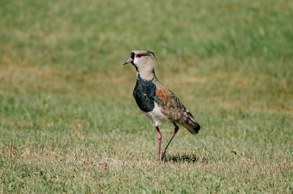

- VIENTO
- 3.10 kn
- VISIBILIDAD
- 3.49 Mn
- OLEAJE
- 1.39 mh1/3
- 11.68 sTp
San Antonio,
el mayor puerto de Chile
19.934.166
TONELADAS MOVILIZADAS
TOTALES
+75.000
PASAJEROS RECIBIDOS
$8.157.000
DE PESOS EN PROYECTOS
MEDIOAMBIENTALES
SOSTENIBILIDAD
Comprometidos con nuestros vecinos, el medio ambiento y el desarrollo
sustentable de nuestra comuna

Estudio de avifauna en las lagunas
de Llolleo y la desembocadura del
río Maipo
Paseo Bellamar, principal atractivo
turístico del borde costero
Organización y apoyo en actividades
culturales de relevancia en nuestra
comuna
Visita también nuestras iniciativas digitales:
18 DE ENERO
Puerto San Antonio destaca avances del
proyecto puerto exterior en su reporte
anual de sostenibilidad
Además, durante 2017, los concesionarios de puerto
mobilizaron casi 1.296.890 contenedores
CONTINUAR LEYENDO
11 de ENERO
Puerto San Antonio alcanza nuevo máximo histórico
al transferir más de 22 millones de toneladas
05 DE ENERO
Puerto de San Antonio continúa con su programa de
visitas guiadas a la bahía
puertosantonio
En Puerto San Antonio (17/02/19), el Crucero
Seven Seas Explorer, de 224 metros eslora y
bandera de Islas Marshall, se encuentra
desde ayer en el concesionario Puerto Central,
con zarpe programado para hoy a las 18 Hrs.
#SAnAntonio #ElPuertodeChile
Fotos: @RubenJeriah
#cruceros #verano #Chile #cruiseship #port
#cruises
Síguenos tambiém en:
@puertosantonio
puertosantonio
LICITACIÓN PÚBLICA
SAI 01/2019
Resumen especificaciones técnicas para el desarrollo de
tareas de mantención preventiva sestema VCMOC
LICITACIÓN PÚBLICA
SAI 19/2019
Diseño, implementación y mantención sitio web corporativo
Empresa portuaria San Antonio
LICITACIÓN PÚBLICA
SAI 18/2019
Contratación de servicios de mantención preventiva y arriendo
de equipos para CCTV de la Empresa Portuaria San Antonio
Av. Barros Luco Nº1613, of. 8 A
San Antonio - Chile.
Tel. (56) 35 2586000
Fax (56) 35 2586010
Inicio
Sistema Portuario
Puerto San Antonio
Puerto exterior
Consecionarios Puerto San Antonio
Planificación
Integración Ciudad Puerto
Puerto Sustentable
Transparencia
Asuntos Público/h8>